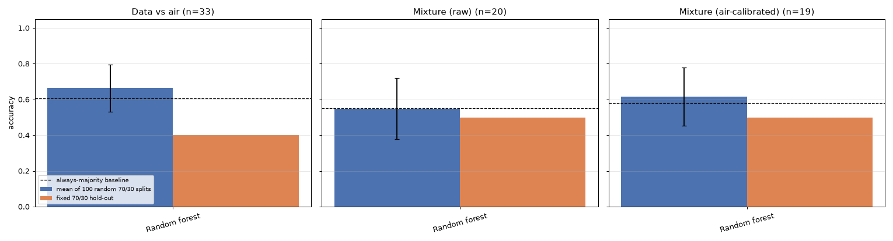
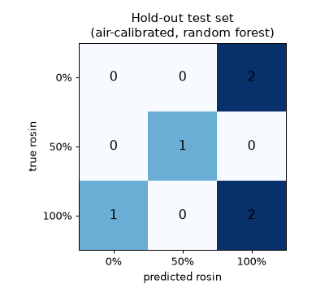
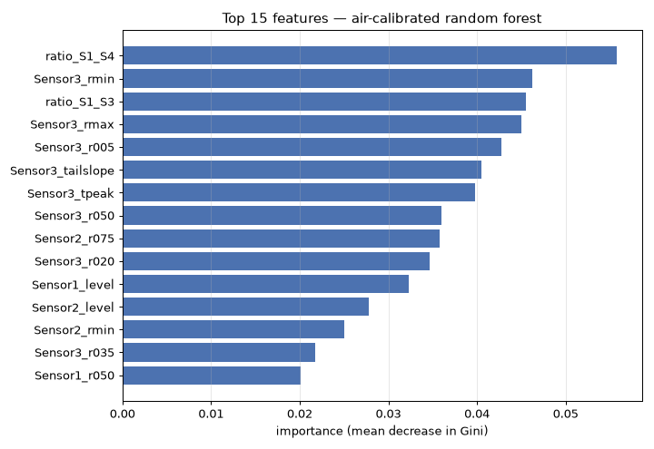
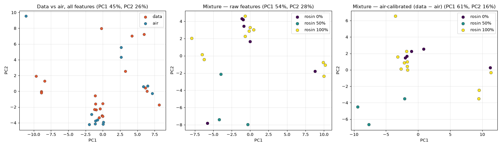

Loading the built-in dataset and training the model…
Compare recordings
Load a file above to see plots.
Summary for every parameter
Predict the mixture
Upload a recording file. Mark which 1-minute recordings are data (sample) and which are air. If the file includes air recordings, the prediction uses the air-calibrated model (data − air). Otherwise it uses the raw model.
Use this file for training
Recordings marked "skip" are not used. The phases you set above are saved together with the label. Added data is stored in this browser.
Use Export to keep a copy or to commit it to the repository (docs/data/extra_training.json is loaded automatically for every visitor).
Training set & model
Model results (offline analysis)
From analysis/train.py. The same Random Forest runs in this page.



